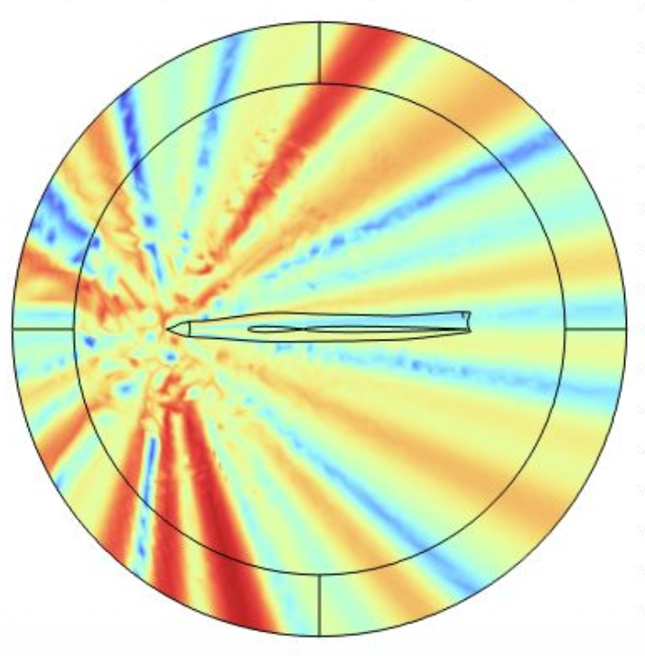
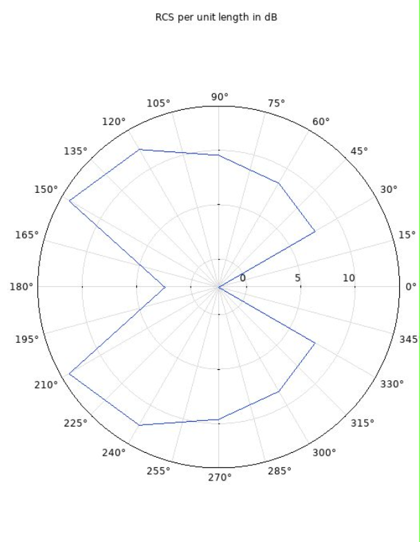

Radar-Minimizing Aircraft Geometry

Built a physics-based optimization pipeline to minimize aircraft radar visibility using COMSOL's RF Module. Implemented and compared three approaches: topology optimization, parametric shape optimization, and an advanced 3D parameterized model to evaluate far-field scattering and relative electric field response for each.
Skills Used
Media
Add additional renders, screenshots, or diagrams here.


